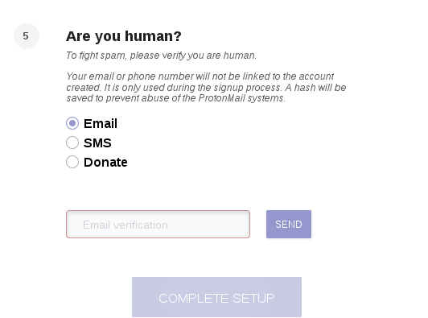

E-mail providers - which one to choose?
- Introduction -- The Providers -
- Google, Yandex, Outlook, Yahoo -
- Hushmail -
- VFEmail -
- FastMail -
- Scryptmail -
- SAFe-mail (safe-mail.net) -
- OpenMailBox -
- Runbox -
- Mailfence -
- ProtonMail -
- Safe-Mail (safe-mail.nl) -
- Neomailbox -
- Paranoid.email -
- Secmail.pro -
- CTemplar -
- KolabNow -
- Teknik -
- Tutanota -
- Cock.li -
- Dismail -
- StartMail -
- CounterMail -
- Posteo -
- RiseUp -
- Disroot -
- Autistici -
- Temporary e-mail -
- Summary -
- On encryption -
- On "privacy-respecting" laws -
Introduction
E-mail sucks but is a necessary evil for now. What should be taken into account while choosing a provider? The most important thing is their privacy policy - as in, what data do they collect and store, and for how long - as well as whom they share it with and under what conditions. Of course, privacy policies should not be automatically trusted - some red flags to watch out for are: too much secretiveness, too much privacy salesmanship, contradictory claims. Always search the Internet for possible breaches that the service in question might have had! Other criteria to consider are: whether the provider supports mail clients (webmail is terrible all around, and takes control out of your hands); the possibility of signing up through Tor / a VPN; and whether its free or paid (though a good paid one is better than a shitty free one; don't worry - the best ones in this report are actually free). Another thing you might want to take into account is how likely is the service to last - if it's been around for 10 years, it's pretty safe to say it will be around for another ten. A single guy running a provider is a ticking time bomb. What about encryption? In-built encryption I consider mostly an illusion - there are various ways of implementing it, but none as robust as PGP with your own keys. And, of course, all of those require webmail, while PGP can be used with mail clients (some, like Claws Mail, even have built-in support). Okay, enough of the introductory bullshit - let's move on to the actual providers!
List of E-mail providers
 Google, Yahoo, Outlook, Yandex
Google, Yahoo, Outlook, Yandex
These are designed to collect as much of your information as possible, and are obviously unsuitable for everyday use. Not much more to say. So let's move on to the ones that are (or pretend to be) more private.
 Hushmail
Hushmail
Everyone is entitled to their email privacy. Take back control of your data and experience a clean inbox with no advertising.
Okay, I'm in! Just give me a minute to check if the evidence supports your claims...
When you visit our website we may collect information about you, including your browser type, operating system and the Internet Protocol (“IP”) address of your computer. We use this information to facilitate your use of the website, gather market information and prevent abuse of our services.
No thanks. But wait, that's only the website - I could possibly deal with that if the actual mail service was private. But is it?
We take steps where possible to limit the personal information we collect.Wow, thanks! So let's see just how limited those "limits" are:
As part of the account creation process your IP address will be recorded. We may request that you provide other information, such as a phone number, as well. We use this information to analyze market trends, gather broad demographic information [...]
Asking for my phone number is very "limited" indeed. And the market trends shit rears its ugly head again.
Information we record may include [...] account usernames, sender and recipient email addresses, file names of attachments, subjects of emails, URLs in the bodies of unencrypted email, and any other information that we deem necessary to record for the purposes of maintaining the system and preventing abuse.
So you're even snooping on the links in my messages! And any other information
is an admission that they could possibly collect everything they imagine. But why pretend it's about preventing abuse
? Just say you're in the business of gathering information.
We store sales, marketing, and customer care information with third-parties that support these business processes, which means that information such as your name, email address, phone number, and company name, as well as the history of communications related specifically to the sales or customer care process, may be stored there.
And now my name and phone number is being sent to whoever the fuck. Could this get any worse?
The records we keep of your activities are permanently deleted after approximately 18 months. Records that are stored for statistical purposes may be kept indefinitely.
...yes, it could in fact get worse. And that's not even the entirety of it (I don't want to write a book here!) - check out their privacy policy (archive) if you want to torture yourself further.
I forgot to mention that Hushmail actually wants money for all this abuse! And it doesn't even support mail clients. Taking all that into account, this is without a doubt the worst choice on this whole list. And they have the audacity to claim stuff like this:
Hushmail has been providing secure, private and encrypted webmail solutions since 1999. Here is why our customers trust our experience in the field.
Yeah sure - very trustworthy you are!
 VFEmail
VFEmail
Requires solving a recaptcha, as well as giving your real name, to sign up. A lot of suspicious things in the user agreement; going over all of them would take a year, so I will discuss only the most important ones:
[...] VFEmail.net can terminate and/or change and/or modify your account [...]
Wait, modify my account? What the fuck? This can literally mean anything, including rewriting your mail, deleting contacts, or changing the password. Suspicious as fuck!
[...] VFEmail.net or its designee may disclose information to third parties about User and User's use of the Service [...]
Great! Prepare yourself for your privacy being ripped away and thrown around to advertisers and trackers.
User acknowledges and agrees that content, including but not limited to text, software, music, sound, photographs, graphics, video, or other material contained in sponsor advertisements or information presented to User through the Service or advertisers is protected by copyrights, trademarks, service marks, patents, or other proprietary rights and laws.
So you will be sent advertisements and can't even show them to anyone.
With a free account, you don't even get SSL encryption on your mail. So it is sent around in plaintext, completely visible to your ISP for example. You can pay to get some useless features, but the terrible TOS still applies. And to lighten up the mood...
If you do recieve mail between your last POP and the snapshot at 12am, it will exist on backup for a week - unless it's on Saturday night, then it's a year.
WTF? These guys must be trolling around here. Your mail is stored in a backup for a week...except on Saturdays! How random.
As for other data, you don't get told what gets stored and for how long. If you still didn't get the memo - get away from this crap! Honestly, it looks as if some jokers just slapped all the anti-user things they could think of, advertised themselves with bullshit like the Metadata Mitigator™
- for which of course you have to pay - and went around their merry way while raking in the cash. This might be worse than Gmail, which is more honest in regards to their (lack of) privacy and provides all its features for free.
 FastMail
FastMail
This is another one of the paid providers which are also absolutely terrible from a privacy standpoint. From their privacy policy (archive):
If you register to use, or use, one of our websites or services [...] personal information that may be collected directly from you includes name, billing address, mobile phone number, organisation name, your own domain name, IP address, browser user-agent and billing details
Name, phone number, address. You're off to a fast start towards privacy hell, FastMail.
We process mail sent and received from your account to block spam and fraud.
The private FastMail scans your mail.
We also store information from your address book, calendar, notes and files on our servers.
Is there anything you guys don't store?
We also collect the email content you create, upload, or receive from others
Guess not - even other people aren't safe from FastMail's prying eyes.
Each time you connect to our service, we log your IP address, your client identifier (browser or mail client information) and your username. If you send mail, we also log the email address you're using to send mail and the email address you're sending to. If you take action on mail in your mailbox, we also log the activities taken.
So literally your every move is being tracked and logged. And now for some humor - look at how they justify themselves:
This is necessary for providing proof of delivery and fraud analysis.
Sure. I wonder why almost no other provider on this list is doing so, then? Now check this admission (from section How do we use the personal information we collect from you?
):
conduct analytics and measurement to understand how our services are used;
Oh, so it was about analytics all along, instead of "fraud analysis" or some other bullshit excuse. And for something even more damning (from section Sharing personal information with others
):
We may share your personal information [...] with third parties who help manage our business and deliver services [...] Some of these providers use “cloud based” IT applications or systems, which means that your Personal Information will be hosted on their servers
And now all the stuff I've talked about will be put on some third party servers.
We may use your name and email address to send direct marketing communications to you and let you know more about our services or related services that we believe will be of interest to you
You will also be flooded with directed advertisements. But how does FastMail know what will be of interest to you
? Of course, it's because of all that collected data - which, remember - includes your mail content! Later they claim that they don't profile you to send targeted advertisements, but that seems to contradict the above - and we should always assume the worst. FastMail also uses the Matomo tracking service, which was described in detail in ProtonMail's section. Anyway, that's quite a lot of data collected - but how long does it stay around?
Where we log information related to your IP address, we retain this information for approximately 90 days.
Where you request that we delete your account from our system, we will immediately lock the account and archive the information, then delete it from our severs within approximately 7 days from the date of your request.
Not bad, I guess. I mean, some other providers take a year or more...But wait:
However, in specific limited circumstances we may store your personal information for longer periods of time
Ha! So the 7 days figure was just for show. Let me quote some related information from another section (archive):
After an account is terminated, data and backups are purged within a timeframe of between 37 days to 1 year after closure
So you do take a year after all. And you fucking lied straight to our faces with the 7 day thing. This seems more and more like some entry-level trolling...Can we say anything at all positive about FastMail in light of the information presented? I guess this:
Providing secure end-to-end encryption via webmail is impossible. There are basically two options, both flawed:
That's right - it's the same thing I've been speaking about. So at least they don't pretend to have some super-duper in-browser encryption. And maybe another thing:
We won't release any data without the required legal authorisation from an Australian court. As an Australian company, we do not respond to US court orders.
But remember that some of your data will be stored on third party servers in other countries, which might have some different ideas...All in all, I struggle to provide a reason to use this one at all. The amount of stored data is simply massive (and I didn't even cover all of it), it's shared with third parties and used for sending advertisements - and you have to pay for all that.
 Scryptmail
Scryptmail
Free 7 day trial and then you have to pay. No mail client support. Claims to encrypt metadata and senders instead of just messages. Blog and support forum appear pretty dead; FAQ is also outdated - says Scryptmail is only a year old, but it's actually 4.
What about the privacy? Website uses Matomo analytics described in ProtonMail's section. And the mail? According to their privacy policy (archive), whenever two Scryptmail accounts communicate, only sent times
metadata is stored. On the other hand, if someone using another provider sends an e-mail to your Scryptmail account, the collected data extends to this:
sender and recipient email addresses, the IP address incoming messages originated from, message subject, body and attachments and message sent and received times.
Other stored information includes: Last login time, IP address, User agent, API call.
Though they claim that they have no ability to match an IP to a specific user account.
Which appears to contradict the earlier claim, since they know when a certain account logged in, as well as with which IP address. It is possible they delete the information about the account which the data belongs to, but to say that they have "no ability" to connect them is a lie.
You should assume that your data will be stored pretty much forever. From the Data Retention section: Active accounts will have data retained indefinitely.
What about deleted accounts?
Your personal data shall be deleted no later than at the end of the calendar year following the year of the termination of the contract unless in an individual case specific reasons to the contract apply. [...] Moreover, the deletion of inventory and billing data may be omitted provided that legal regulations or the prosecution of claims require this action.
In summary: paid, no mail client support, confusing and contradictory privacy policy, significant amount of data stored and never deleted. Avoid!
 SAFe-mail (safe-mail.net)
SAFe-mail (safe-mail.net)
Israel-based service established in 1999. Before I delve deep into the meat of the issues, let's look at the first impression. Namely, the site structure and grammar is something a chimpanzee would make - this makes getting any information from the site a puzzle in itself. Most of the stuff in there is ancient, and some sections contradict each other. They've had 20 fucking years to make a proper website but instead we get this abomination...but let's try to make sense of it anyway:
SAFe-mail pretends to be privacy-based but has no real privacy policy. The only thing is a snippet from 2008 saying:
Safe-mail.net is not using cookies and not collecting any data about users. Safe-mail.net does not transfer, sell, trade or oterwise exchange any data it might have about its users with any other company.
So it allegedly does not collect ANY data about its users. Why, then, do they bother to qualify it with a statement that they also don't sell the data? Wait, there's also this: (from the user agreement) (archive)
SAFe-mail Ltd. will not disclose information about you or your use of the SAFe-mail system, unless...
Okay, so you DO have data about your users after all...
You agree that SAFe-mail may access your account, including its contents, for these reasons or for service or technical reasons.
So now you admit that you can access even the contents of my account? Isn't this an admission that you read our mail?
Please note that your Internet Protocol address is transmitted with each message sent from your account.
No shit. But what we're interested in is whether that IP, or any other data, is stored by SAFe-mail, and for how long - and this information is not provided. Does this not sound suspicious? SAFe-mail spends a lot of time posturing on how privacy-based it is, yet seems strangely secretive about the kinds of data it collects; in fact, you have to read between the lines to realize that it stores anything at all. A clear indication of a honeypot to me.
The free account does not support sending mail through the mail client, only receiving. Other alleged privacy features like the SafeBox are also paid only. Of course, once you pay for the service, you are not anonymous anymore - they, again, don't accept bitcoins. Registration form asks for your real name and phone number; there is a manual approval of every account. I've tried to sign up through Tor while leaving the phone number field empty - but giving a real-looking name - and didn't receive the confirmation in two days. However, one reader has had a different result and was able to access his account in one day. Regardless, this seems like a honeypot and is NOT worth using.
 Runbox
Runbox
Their website is so full of privacy posturing it's a wonder how they managed to fit anything else. I won't bother quoting it all here; let's move right on to seeing whether the posturing is actually worth anything (spoiler: it isn't). From their privacy policy (archive):
You consent to providing us with the following personal data when you register an account: First name, last name, company name (where applicable), mobile phone number (where applicable), country, and alternative email address. [...] To revoke this consent you must terminate the Service
Sorry Runbox, but requiring my real name just ain't privacy-respecting. The first impression already isn't very good...and it's just the beginning.
Your Account Information is stored on servers located in Norway for as long as your account is active...
Great, so I have to kill the account for you guys to stop storing my information. And then it's fucking gone, right?
...and: up to 1 month after closure of trial accounts; or up to 5 years after closure of subscribed accounts, as financial records must be kept for 5 years according to the Norwegian Bookkeeping Legislation.
No, of course it isn't fucking gone - that would be too private for the "privacy-loving" Runbox. So it's five years after the deletion of your account until your real name is gone from their database...or is it?
Backup of Account Information is stored on secure servers separate from the Runbox system for up to 6 months, even after the information has been deleted from the main storage.
Nope, the privacy-loving Runbox is truly smashing all the previous privacy records set by privacy giants such as Google or Yahoo; it's five and a half years until your data is gone from their servers! Oh Runbox, what are some other ways in which you protect my privacy?
Email service content (data associated with Webmail, Contacts, and Files in the Service) is stored in main storage on servers located in Norway for as long as your account is active and: up to 3 months after closure of trial accounts; or up to 6 months after closure of subscribed accounts.
So all your mail and metadata (sender, recipient, subject, date/time) is stored as long as your account exists. There's also the backup which is stored for longer. Should we prolong this torture? Okay, let's do the finishing move and get this over with: The Runbox "service" is fucking paid! Can we say final nail in the coffin? Seriously, they're like a Gmail you have to pay for...but wait, there is more: (I swear it's the last quote!)
If you correspond with us via e-mail, the postal service, or other forms of communication, we will retain such correspondence and the information contained therein.
To say something positive, I will mention that they accept Bitcoins...and you can use them through the mail client. There is also a 30 day "free" trial. Oh, and they are powered by renewable energy sources (but so is the actually private Posteo, reviewed later), which is the only really commendable thing about this "service". But since the data collection and storage policy is so terrible, you should stay away.
 OpenMailBox
OpenMailBox
Has no privacy policy at all - a huge red flag; in fact, all they really say about privacy is that all user data is stored in privacy respectful countries
- without, of course, specifying those uber-private countries. ReCaptcha is required to sign up, which shows you just how much privacy matters to them (if they submit to the Big G's botnet, you can safely assume they store fucking everything). Openmailbox severely lacks ethics, deleting features without notice (archive):
Free users of Openmailbox could use IMAP/POP to connect to their mailboxes previously. The new owner of the service, French company SASU Initix, disabled the option without prior notice for all free account owners.
This blocked the use in all email clients for free users, and left them with no choice but to use the web interface instead to do their mailing.
Related to that is the removal of the mail aliases feature. The available aliases were removed completely and stopped redirecting any messages.
Imagine you've used an alias to talk to your family and it suddenly stops working - so you don't get their messages anymore, unaware of the reason it happens (hey, maybe they hate you now...). They also claim you can make an account in a minute - which is simply mockery due to ReCaptcha. Their Terms of Service (archive) follow the same principles (or lack of):
OpenMailBox reserves the right to amend this text, without prior notice, and you are therefore responsible for making yourself aware of the latest version of this text. In the event of a breach of these conditions, your user account may be locked or deleted, with no option for redress or compensation.
So if they suddenly decided VPN / Tor users are dangerous terrorists, they will kick you out just like that; say goodbye to your contacts, messages, everything (since mail clients don't work, you can't easily download them). Free accounts inactive for 180 days will also be deleted.
There is a rumor going around reddit that either OpenMailBox or Autistici gave access (archive) to someone's account to the Singapore Tax Authorities. However, this is almost impossible for Autistici since it would go against everything they've always stood for (archive):
After 2005 we have been constantly pestered by prosecutors and security forces (and even by the Vatican! [4]) asking us to hand over users’ data and identities and we are proud to say we were always able to answer: we are sorry, but we do not have them. Recently (2010) some very smart policeman managed to convince a judge to order the full seizing of three servers in three different countries to find out if we REALLY did not have any data about a user’s activity on our servers [5]. After spending a lot of public money (for a couple of graffiti on a wall), the judge ended up with a lot of encrypted files with no useful information inside, and maybe he’ll think twice about giving out other investigations to the cunning policeman.
On the other hand, it would be quite consistent with OpenMailBox's proven lack of ethics. But, in the end, it is just an unconfirmed rumor - so take it with a grain of salt (however, the person did post it more than once).
In short - no privacy policy, no mail client support (for free accounts), no respect for the user. Just a cash in for their premium service which still doesn't guarantee you any privacy (in fact it's a possible honeypot for governments). No reason to use this at all when you've got other free services available with more features, better privacy, and actual ethics.
 Mailfence
Mailfence
We believe that online privacy is a fundamental human right which can no longer be taken for granted so we decided that it was time to offer a service which is fully dedicated to email privacy.
I've heard that before. Let's see how this claim stacks up with your privacy policy (archive)...
We implement a local instance of Matomo [...]
This crap again. Read ProtonMail's section to see just how vile it is.
We collect IP addresses, message-ID's, sender and recipient addresses, subjects, browser versions, countries and timestamps.
Already a red flag here...but let's check out how long does this data stay there:
We retain backups of deleted messages and documents for 45 days.
Very private you are. And then comes this excuse:
This is for the purpose of restoring data in case of accidental deletion by users. After 45 days, data will be permanently deleted from all our systems.
Yeah sure - it's always "for the user's good". In the end, your deleted mail will stay on the servers for 45 days, regardless of justification. And if that wasn't enough...
Should you close your account, all data will be permanently deleted 30 days after the legal expiration date (i.e. the Belgian law imposes 365 days after account closing).
So you have to wait for over a year for your "deleted" account to be actually deleted. Nice privacy you've got there.
Mailfence makes a big deal about being protected by strong Belgian privacy laws - but not only has this been refuted above, but the relevance of these laws is doubtful anyway
Sign-up form requires JavaScript and asks for your real name - but you can give a fake one; there is no waiting period for approval. Mail client support is paid only; they do accept bitcoins though. Allows importing your PGP keys but it's still all done in-browser. All in all, no free mail client support and a disappointing privacy policy despite lots of posturing - forget about this one.
 ProtonMail
ProtonMail
The most popular "private" E-mail provider, and often the first choice of a person getting away from the three giants. But does that mean it is in fact quality? Let's start with the sign-up process - if you're signing up through Tor or a VPN, ProtonMail requires SMS confirmation:
And if you try to receive confirmation through a RiseUp E-mail, it says this:
So, SMS is the only option (unless you want to donate, which would reveal your personal information of course); therefore their claim that ProtonMail does not require any personally identifiable information to register
is a shameless lie. Update: a contact told me that Proton now includes the option to solve a recaptcha (still an evil) for confirmation; however, the option disappears while using a VPN. They must really want that damn phone number if you are using anonymizers! And the claim that you can sign up without personal data is still false.
The way their "end to end" encryption works is by generating the encryption keys while you sign up - using your already existing keys is not allowed and ProtonMail must store the generated private key (archive) for PGP to work. Since the whole encryption process is done by JavaScript in the browser, nothing prevents them from sending you backdoored JS; the encrypted messages can also only be sent to other ProtonMail users, unless using the paid account (update: actually, a friend has told me that the latter isn't true anymore, though you have to upload the recipients' public PGP keys to ProtonMail if you want to use them). According to researchers, ProtonMail's encryption contains serious shortcomings. At the end of this report, I also link to an article detailing the issues with in-browser encryption in general. Mail clients are not supported except, again, through a paid feature called "Protonmail Bridge".
But let's move past the fluff and see which data does ProtonMail actually store and for how long. Quoting from their privacy policy (archive):
We employ a local installation of Matomo, an open source analytics tool. Analytics are anonymized whenever possible and stored locally (and not on the cloud).
So when you visit their website, this Matomo spies on you. But what data does it actually collect? From Matomo's website (archive):
All standard statistics reports: top keywords and search engines, websites, social media websites, top page URLs, page titles, user countries, providers, operating system, browser marketshare, screen resolution, desktop VS mobile, engagement (time on site, pages per visit, repeated visits), top campaigns, custom variables, top entry/exit pages, downloaded files, and many more, classified into four main analytics report categories – Visitors, Actions, Referrers, Goals/Ecommerce (30+ reports)
So that's the website. What about the e-mail service?
we have access to the following email metadata: sender and recipient email addresses, the IP address incoming messages originated from, message subject, and message sent and received times. [...] We also have access to the following records of account activity: number of messages sent, amount of storage space used, total number of messages, last login time.
Great, even more metadata than Tutanota (if you trust Tutanota's claims that they collect as little metadata as they say they do). And then there's this gem:
When a ProtonMail account is closed, data is immediately deleted from production servers. Active accounts will have data retained indefinitely. Deleted emails are also permanently deleted from production servers. Deleted data may be retained in our backups for up to 14 days.
Read that again! Indefinite retention of data by the "private" ProtonMail! And 14 days for deleted data - enough for "them" to get you. At least there's disk encryption...
If you read their transparency report (archive), you will see quite a lot of requests for their data from governments all around the world. ProtonMail pretends to "require a Swiss court order" to cooperate - but you see that they often do that before receiving it - so don't expect that to protect you. One particularly egregious example is from May 2018, where they disabled an account because of terrorist allegiances - and we all know that's not just a convenient excuse these days, right? So, what we have here is a provider that does not support mail clients, spies on you on their website, stores your e-mail metadata forever and immediately gives it up whenever government knocks on the door and shouts "terrorism!". Its encryption is also lacking according to researchers, and cannot be used for non-ProtonMail accounts without paying. And then - after all that - it claims to be a champion of privacy...As we can see, ProtonMail is found out to be a paper tiger when examined deeper. It does have an onion domain, but guess what - when you try to sign up through it, you are redirected to the regular domain with no indicators unless you happen to look at the address bar. This behavior is something I'd expect from a honeypot - you expect the added security of an onion domain, but it's suddenly not there. Avoid!
 Safe-Mail (safe-mail.nl)
Safe-Mail (safe-mail.nl)
Let's move straight to the meat of the issue:
The Safe-Mail Team are a bunch of nerds with a clear vision about privacy. And we want to give others the opportunity to protect their privacy. With a Safe-Mail community we want to let the world know that privacy is a legal right and we are ready to fight for it.Great, and yet...
The provider does not check on messages or any other content stored on Safe-Mail.nl unless bound by law to do so (this means only when we get a court order!!).So you can check on messages? Anyway, they will not fight court orders. So much for the
privacy is a legal rightposturing.
We do not hold any user information accept for the information you give us at the registration.Unfortunately, that information includes my real name and city (I guess I can give a fake one, but still...).
Safe-Mail.nl does not have a true privacy policy, so all we have to go by is the above snippets plus a section from their FAQ - What do you log? - which says:
The whole Safe-Mail system is using different log files which we need to access when there are problems with the system. It's called maintenance and important for the health of our Safe-Mail system. We totally understand that it feels uncomfortable by the idea that you aren't really anonymous then, but we also cannot say that we log nothing. But we are convinced that log files older then 7 days does not have any value to us. Especially when it contains maintenance value. So we decided that all logs with "specific" information are being deleted from the server after 7 days. Log files only takes up space and we want to save that for more important matters. That does not mean you can abuse the system. There are rules and our guess is that all of you know what those rules are. We fight for privacy here, but we condemn illegal activities. Please, think wise and twice when you use the Safe-Mail system.
Not many specifics - remember, secretiveness is a red flag - but "specific" data (whatever that means) allegedly stays around for only 7 days.
Free account does not support mail clients. They do accept bitcoins so theoretically, you can have an anonymous account with mail client support. Even in the free account, you can upload an S/MIME certificate to have end-to-end encryption, however, unlike PGP, this relies on trusting a certificate authority - similar to SSL.
Maybe I'm a little too harsh on this one - but if FREE services with mail client support are available - that also don't ask for your real name - and will ACTUALLY stick their heads out for your privacy - then those should be used.
 Neomailbox
Neomailbox
Paid only - 50$ per year; bitcoins accepted. Mail client support. TOS forbids you from badmouthing the service (lol) - not publish or post false, malicious, defamatory or libelous comments about Neomailbox or Neomailbox Customer Support in any form online of offline
. What about the privacy? Not much is mentioned except:
We maintain logs of SMTP traffic for 60 days for performance analysis and abuse prevention. Anonymous surfing logs are wiped every 10 minutes.
And in another part of the website:
We keep no logs or customer data other than what is absolutely necessary for performance tuning and security monitoring of our servers. Your IP address is not saved in our logs. All logs are deleted every 7 days.
But wait, that contradicts the earlier quote. So they didn't explain themselves clearly - that's a red flag; as if they didn't want you to know what exactly do they store. You should assume the worst - namely that all your mail content and metadata is saved for 60 days. There is also this:
The following statement is true on October 1st, 2018: Neomailbox has never released any customer data to any government agency or other entity.
That's nice. However, the fact is - not only do you have to pay for getting your data stored for 60 days, but cannot even say a bad word about them. At least they have disk encryption and disposable addresses...regardless, for a paid service Neomailbox is pretty bad; there are free ones that thoroughly outclass it.
Paranoid
Alleges itself to be extremely privacy based, with quotes such as Our mission is to return the feeling of privacy back to people.
and Return the privacy to day-to-day email communication and make it as popular as possible.
However, the service has no privacy policy, so you can't know what do they actually store. They say that they are PROBABLY THE ONLY OPENPGP-ENCRYPTED EMAIL BOX
, but that isn't really true - even the dreaded ProtonMail and MailFence have that (though the implementaion is worse). Supports mail clients and has an onion domain. Here's the big thing though - Paranoid requires an invite, which I tried to get a few days ago. First, it told me that my cock.li mail is "disposable" and won't be accepted. Then I signed up with real disroot account and - though the message about the disposable services didn't appear - I still didn't get a reply in 5 or so days. One of my contacts says his friends sent requests months ago that are still not accepted. Thus, regardless of its privacy, Paranoid appears to be pretty useless.
Secmail.pro
Onion-only provider accesible through http://secmailw453j7piv.onion. No mail client support. Signing up is hassle-free with simple captcha and no personal information required. Keep in mind that - even though connecting through onion means that your IP address likely won't be revealed - secmail could still read the mail contents unless they are PGP encrypted. Since the Tor network is a very tasty target for various spies, it makes secmail's trustworthiness all the more important - and unfortunately, they fail the test. The service contains no privacy policy - though it has some vague claims of really caring about your security, there is zero information on what they store and for how long. Their clearnet domain contains just a link to the onion - however, it has no SSL so an attacker could rewrite the link to their phishing site and steal credentials. In fact, this is how SIGAINT, another onion e-mail provider, got hacked sometime ago (archive):
“We are confident that they didn’t get in,” states the alert. “It looks like they resorted to rewriting the .onion URL located on sigaint.org to one of theirs so they could MITM [man-in-the-middle] logins and spy in real-time.”
Another investigator wrote them an e-mail a few days ago where they said that they have no time to implement SSL (they are relying on the Tor network's automatic bad relay detection, which is not perfect - In 32 days I've found 15 instances where a node is sniffing and using my credentials
). They've had two fucking years to support SSL but don't - and since they know about SIGAINT's hack, making themselves intentionally vulnerable to the same means they are either be heavily incompetent or a honeypot. Secmail has also refused to comment on not having a v3 (more secure) onion domain; do they also not have time for that? All it takes is one additional line in the config file (archive).
When secmail got started, they advertised themselves on reddit (archive), where they took a lot of criticism. For example, their first server configuration used to reveal the OS and PHP versions, which makes it so much easier for hackers to get in - and at that point, they were already operating for more than six months
- can you say incompetent? So, despite allegiances of security and the allure of the darknet, I'd stay away from this one. It has nothing at all over RiseUp which also supports onion domains (v3 as well!). Read a deeper investigation of secmail here if you're interested.
 CTemplar
CTemplar
Privacy policy (archive) doesn't say much about what data the service collects - except that the site uses pixel trackers and the roundabout admission that it collects aggregated usage data (We do not provide aggregated usage or tracking information to third parties.
). You're also tracked by the e-mail they send you - When receiving email from us, we may place a small piece of code in that email to determine whether or not you can accept HTML images and whether or not you viewed and/or clicked on links contained in the email.
Apparently you can opt out of that though.
To find out about their data collection policy, we have to visit the Security page (archive) instead. There, CTemplar claims to not store your IP address but says nothing about the metadata or really anything else. Though the lack of IP storage is great, we're left in the dark about other important information. Maybe the FAQ page (archive) has something? Turns out they do. You can delete your account any time and nothing remains of it. So far so good (except the metadata issue...). Why so secretive? CTemplar brags about benefitting from the World’s Strictest Data Protection Laws
, and while doing research for the section on laws, I've decided to check what's so great about Iceland's laws anyway. And that, my friends, will reveal why CTemplar says nothing about your metadata! From https://www.ivpn.net/internet-privacy-laws-in-iceland (archive):
However, having said that, Iceland did pass the Electronic Communications Act 81/2003 which implemented data retention requirements. This was claimed to be mandated by Iceland’s inclusion in the European Economic Area (EEA). The Icelandic data retention law applies to telecommunication providers and mandates the retention of records for six months.
There you have it! CTemplar stores your metadata for 6 months and does not tell you about it so that their facade of being hosted in a privacy-respecting country isn't busted. Actually, reading some more about this, I'm not 100% sure if my interpretation is right here (hey, lawyers need a fucking job too...) - but if it wasn't, why the fuck is CTemplar silent on the metadata issue? Other cracks start to appear as well if you dig deeper. First of all, CTemplar requires solving exploitative ReCaptcha to register. There is no mail client support - and even though they allegedly plan to include it, it will very likely be their custom one. How do I know? From their TOS:
In the event that wet offer downloads of software on a Service and you download such software, the software, including any files, images incorporated in or generated by the software, and data accompanying the software (collectively, the "Software") are licensed to you by us or third-party licensor's for use pursuant to the Terms. Your use of the Software may be governed by additional terms, which may be included with the Software. Please carefully read any additional terms to determine the full extent of conditions governing the use of such Software. We do not transfer title to the Software to you. You may not copy, reproduce, distribute or otherwise exploit the Software or decompile, reverse engineer, disassemble or otherwise reduce the Software to a human-readable form. Note that if you install certain applications that may be available via the Services, you consent to the download of Software to your Internet Device and accept these Terms and any additional terms related to such application.
What kind of mysterious software could they be refering to except a mail client? I can't think of one. So, if they do eventually create it, it will be proprietary and the TOS will forbid you from reverse engineering it. And if they offered some other software, this terrible policy would apply to is as well. The TOS contains some other suspicious shit:
For example, you may not use the Services in a way that could [...] give you access to the Services or Content using any interface other than the interface that we provide, or attempt to "scrape" or "harvest" Content.
A plain reading of the above quote would suggest that you cannot even use something like cURL or wget to interact with their shitty webmail. They also admit they can kick you out for no reason whatsoever:
In addition to our other legal rights, we may limit or terminate your license to use the Services, or certain features of the Services, at any time and for any reason, without prior notice to you including our belief you violated these Terms.
And remember - there are paid tiers of CTemplar. And as the above quote doesn't say that it only applies to free accounts, assume that they can deny you the service you paid for - pretty much stealing your money. Regarding payment, they store the records for 14 days, but you can use bitcoin.
Summary: Everything looks all shiny if you only care about hiding your IP (they also support Tor, even having an onion domain) - but if you decide to venture further, the CTemplar fortress crumbles. No mail client support, likely 6 months metadata storage, slavery TOS disallowing scraping and being able to ban for nothing. ReCaptcha just adds insult to the injury. Despite Tor support and lack of IP storage, I don't see too much point to using this one except possibly as a disposable, cock.li kind of account (but still, webmail only, ugh).
 KolabNow
KolabNow
Paid, requires real name and an existing E-mail address to activate. Accepts bitcoin. Full of privacy posturing, complete with the claim of being protected by strong Swiss privacy laws. Such as this one (archive), for which they've gotten a government data request that they complied with:
Damage to data 1. Any person who without authority alters, deletes or renders unusable data that is stored or transmitted electronically or in some other similar way is liable on complaint to a custodial sentence not exceeding three years or to a monetary penalty. If the offender has caused major damage, a custodial sentence of from one to five years may be imposed. The offence is prosecuted ex officio. 2. Any person who manufactures, imports, markets, advertises, offers or otherwise makes accessible programs that he knows or must assume will be used for the purposes described in paragraph 1 above, or provides instructions on the manufacture of such programs is liable to a custodial sentence not exceeding three years or to a monetary penalty. If the offender acts for commercial gain, a custodial sentence of from one to five years may be imposed.
I don't understand exactly what the above means - sounds like hacking but could be interpreted in many ways (even deleting your own mail could fit deletes or renders unusable
). I explore the "laws" issue in-depth at the end of this article, so let's move on to KolabNow's privacy policy (archive). It says literally nothing about what data do they actually store aside from We [...] guarantee you that there is no third party access to your data.
No information about the length of data collection or the possibility to delete your account and what does it actually do. Maybe we can find something in their TOS (archive) then:
We will only keep the minimum of logs and debug information necessary to ensure that we can improve the service and resolve issues that may have occurred.
Minimum of logs - yeah, that tells us a lot. Umm...maybe their Legal Framework (archive) page has something more concrete?
These are requests for retained data. Switzerland has a legal requirement for six months data retention by the provider. Data that is retained is communication metadata, so information about who communicated with whom from where and when but not the actual content of the communication.
Swiss privacy laws in action - but at least we now know something about KolabNow's data collection. By the way, their transparency report has been last updated in 2017, so they might have gotten more requests since then. In fact, the whole site appears to be dead (even their Twitter). In summary, I don't see a reason to use this one - paid, asks for real name, stores 6 months of metadata and doesn't reveal anything useful in their privacy policy. Why can the free RiseUp manage to store metadata for only one day - despite being hosted in the allegedly un-private United States - while the service with super strong Swiss privacy laws cannot? Supporting mail clients is KolabNow's only positive it seems. That, and I guess accepting bitcoins - but since you can find better providers that are free, why bother?
 Teknik
Teknik
Requires an invite code to register. Supports mail clients. Has a nice feature of (I assume) displaying your public PGP key to others if you provide it. The privacy policy does not say much, however:
We use Piwik to track user interaction with the site. We keep it hosted on the server locally, so no analytic data is leaving the server.
Piwik has changed its name to Matomo recently, so just read ProtonMail's section to know more about it.
Dates - When you perform an action (ie: register an account), the date of the action will be recorded.
I assume this goes for all actions? Then it's absolutely terrible. What comes next?
Emails - Any email you send or receive with your Teknik.io email address is stored locally onto the server. These emails are not read.
Thanks for not reading my mail...and that's it for Teknik's privacy policy! No mention of whether the deleted e-mail is actually deleted, if there are any backups, what kind of data is shared and under what conditions. Nothing whatsoever! Pretty suspicious if you ask me. IMO, it's not even worth bothering to get an invite code for this, when better alternatives exist that don't require it. NOTE: The webmail can conflict with the LinkBot extension if you use it, so disable it for this website.
 Tutanota
Tutanota
This was my first provider after I got concerned about privacy and dumped Gmail and friends. That was before I "dug deep" - needless to say, I don't recommend it anymore. It does not support mail clients; I used to think that's something dinosaurs use, but now I can't live without it. Encryption works only if you pre-shared a password with your recipients (unless they also use Tutanota, then it's automatic) - and that, of course, comes with its own issues (how to share the password securely?) which PGP has already solved. And since Tutanota is only accessible through webmail or their shitty desktop client (which is the same as the webmail it seems), they could easily modify the code to send themselves your password and be able to decrypt your shit. Tutanota does not support the usage of other encryption, like PGP (and in fact shits on it on its website [archive], even though it's the only real E-mail encryption you can have). Unlike with ProtonMail, there has been no third-party audit of Tutanota's encryption; however, at the end of this report I link to an article that discusses the issues with in-browser encryption in general. There's also this worrying policy in regards to logging:
In order to maintain email server operations, for error diagnosis and for prevention of abuse, mail server logs are stored max. 7 days. These logs contain sender and recipient email addresses and time of connection but no customer IP addresses.
No IP addresses? Great! Except if you use a VPN or Tor - Storage only takes place for IP addresses made anonymous which are therefore not personal data any more.
It's a genius excuse, isn't it? You've hidden your IP so it isn't personal...except if Tor or the VPN ever got compromised. Also, later you will learn how just the metadata (which Tutanota does store) can reveal much more about you than you'd ever guess.
Signing up is free, but you are limited to only one account if you don't pay. If you do, then prepare for this:
For the execution of credit card payments your credit card data will be shared with our payment service provider Braintree. This includes the transfer of personal data into a third country (USA)
Later they say that they have an "agreement" with this company that they will only use your data for the processing of the payment - but the value of these "agreements" is doubtful, in my opinion. Your payment data is also stored for whoever knows how long:
Order-related data and the addresses associated with the order are stored in respect to tax, contract and commercial law retention periods and erased at the end of those periods.
Summary: no mail client support, stores your anonymized IP and metadata, indefinite (?) storage of payment data. Not terrible but not great either.
 Cock.li
Cock.li
Sounds good at first glance - supports mail clients, does not ask for personal information, allows registration and usage using Tor and other privacy services,
and is run by "some dude", not a business
. I've confirmed it does actually support Tor - however, a proxy extension I've been using did not work. Claws Mail could not automatically detect the settings, but manual configuration is still possible. So is this the service to use? For that, we will have to see what data does it collect, as usual:
IMAP and SMTP logs include: When an E-mail is sent, the username, destination e-mail address, and information about the connection (like IP address, quota information) When you connect to IMAP, what IP address and username (if any) you are logging in with, and if that login was successful
These, according to cock.li's privacy policy (archive), are stored for 48 to 72 hours. When you visit their website, cock.li stores this information: HTTP access logs containing your IP address, user agent, and type/location of your requests
. They say it's not related to your account, but it would be trivial to connect them.
Cock.li's privacy policy is a little unclear on that point, but it seems that you can delete all your data manually - aside from registration information - and it will be gone immediately. Removing the latter requires erasing your account, but even then, that data will be kept for 30 days.
Cock.li has to be commended on its honesty. Privacy policy and TOS are short and straight to the point. It admits it can read your mail and that it cooperates fully with law enforcement; transparency and donation reports are also available. There's one other thing you might want to know about though...
https://arstechnica.com/tech-policy/2015/12/cock-li-e-mail-server-seized-by-german-authorities-admin-announces/ (archive)."That means that SSL keys and private keys and full mail content of all 64,500 of my users, as well as hashed passwords, registration time, and the last seven days of logs were all confiscated and now are in the hands of German authorities,
Yeah...I mean, could this have gone any worse? The victims of this breach were probably wishing they never cared about this "privacy" stuff and still kept using Gmail, haha. Also, forget about having a normal domain name with this guy - they are all shitty jokes about cocks, rape, memes like blazeit and others you'd rather not show to most people. Another really significant issue is how often the cock.li domain is blocked on various sites. With that in mind, I cannot anymore say that this is a good choice at all. It does at least have an onion domain at http://mail.cockmailwwfvrtqj.onion/; this, however, does not prevent them from reading your mail or storing the metadata.
 Dismail
Dismail
Best "sign up and go" service if you trust its privacy policy. Well, there is a slight hassle in having to send them an XMPP message first - but the e-mail activation appears to be automatic, so it isn't a real problem. Signing up requires no personal information. Supports mail clients. There is disk encryption:
All emails you send and receive while using our email platform, as well as all contacts, are stored on an encrypted file system.
Good. This means that if anyone seized the server, they would get only encrypted data. According to Dismail, they haven't ever gotten requests from the government (but would they tell you?). But let's say someone got the server anyway and managed to decrypt the data - what would he get?
SMTP logfiles: Sender, recipient, message ID, and size of every sent and received email. [...] IMAP logfiles: Which account has logged in when from which IP address.
Hmm, that's quite a lot of metadata - which can be pretty revealing, as I describe later. They claim they delete it after 3 days, which is better than most other providers rated in this report. Though the ideal would of course be no storage of metadata.
Neither the email content nor its subject line are stored.
This is the big one which makes Dismail better than the other hassle-free services. Your most important information - the mail content itself - is 100% protected.
 StartMail
StartMail
Free 7 day trial with limited features. Paid version has mail client support, disposable e-mail addresses (a'la airmail) and OpenPGP encryption. But as usual, the most important issue is their data collection policy. Do they actually follow their Privacy. It’s not just our policy. It’s our mission.
slogan? Let's find out. First, their website:
The data that's collected and processed by their website include: your IP address, browser and operating system type and version, browser language settings, country, date and time, origin of your visit, as well as clicked links and visited (parts of) pages of their website. Hmm, the latter sounds suspicious. Wonder how do they justify it? to help us get an idea of which of our pages appear to be effective to inform our visitors
. How about the origin of your visit? to assess the success of our search engine optimization and information outreach efforts.
And the country? to know in which countries and at what moments our marketing efforts appear to be effective.
Sounds like good old tracking to me. They claim this data is then "deleted or anonymized", but whatever. I don't know about you, but I don't want to be apart of their "marketing" and "information outreach" experiments - anonymized or not. How about the mail service?
When you delete an email, it is immediately deleted from our production servers, unlike what happens with many other webmail providers. Only on the off-site backups (which are fully encrypted, of course) a copy will remain for the maximum retention period of three days. Your Account will be stored for as long as our Agreement remains in force. When an Agreement is fully terminated, all data contained in the Account, including all emails, will be deleted permanently.
No issues here, really. How about sharing the data?
We will not comply with requests from any authorities other than Dutch authorities. If we receive a request from any foreign government, we will refuse to comply and will instead refer the requestor to place a formal request to the Dutch authorities for mutual assistance.
StartMail will never cooperate with any voluntary surveillance programs. Under the strong current laws that protect the right to privacy in Europe, European governments cannot legally force service providers like StartMail to implement a blanket spying program on their users. Should that ever change, we will use all methods at our disposal to resist.
We will not comply with any requests from private third parties to provide information about our Users, unless we would receive a valid Dutch court order to such effect.
So, third parties can't get your data and government needs a valid Dutch court order; they will also resist blanket spying programs. Not bad, I guess. There's one more thing you might want to know about, though. Since the service is paid, and they don't accept bitcoins, you won't be anonymous. And they keep payment information for 7 years - We store invoices for 7 years, or whichever period may be prescribed under applicable tax law.
And, according to Wikipedia, invoices contain personal data, such as your name. Quite a stain on an otherwise decent policy. Still, this is one of the better choices here - but if you really want a paid service, the one below is probably slightly better.
 CounterMail
CounterMail
Paid service, with 4 EUR per month (4 times more than the below!). Accepts bitcoin so you can pay anonymously. Privacy policy says no IP logs, however they do store mail contents and metadata and don't state for how long. Apparently there are no hard disks on their servers so if they turned them off in time, a raid wouldn't be able to get anything without some RAM extraction magic. However they could still be hacked while online of course, or "compelled" to give away the data. Supports mail clients and up to 10 aliases. Sounds like a great service - and it actually is similar to the below, but there's some cracks in the wall. Though it alleges to support automatic PGP encryption, you can only use their own keys, and we know the perils of that. Actually, there's an option to generate your own, but you have to send them to CounterMail to use them, which seems suspicious as fuck. The Java browser plugin is also required to sign up (man, I haven't used that in years). FAQ is 6 freaking years old as of writing this. There's a free 7 day trial if you want to try CounterMail - but check out the entirety of this report first, because better things are coming...
 Posteo
Posteo
Their privacy policy (archive) starts off very promising:
we strictly do not save any IP addresses that could be traced back to customers. [...] This was independently confirmed in an audit report by the German Federal Commissioner for Data Protection.
The audit is in German so I can't confirm what was actually checked, but it's great that they bothered to do it (unlike CounterMail and StartMail). A slight hiccup here though:
In the communication between email servers via SMTP, we come to know the IP addresses of other email servers (for example IP addresses from GMX and Gmail servers). The IP addresses of the servers are logged in the logfiles and deleted after 7 days.
So your own IP isn't stored, but the one of your recipients is for 7 days. How about the mail contents?
When you delete content data, it's deleted immediately. We save all content data daily in a security backup and keep this data for a duration of 7 days.
So you can delete your mail anytime, and it's gone except for the backup. Not bad; you can encrypt the backup as well:
Additionally, we offer the possibility to encrypt all emails, notes, contacts and calendar entries that are saved at Posteo individually with the password of the account (AES-encryption).
Posteo is a paid service (1 EUR per month), though it alleges that the payment data is anonymized (as in, not connected to your account); you can read more about this here (archive). However it is unclear what is actually saved - on one hand, they say that Despite the change in the law, we still do not save any of our customers' user information
; and on the other - For PayPal payments: The time and date of a payment, the amount, and the name of the payer
. The data is stored for 10 years; they say it is not connected to the user's account, but you will have to take their word for it. Cash payment is also available.
No tracking shit on their website, unlike StartMail. No IP storage, e-mail deleted immediately upon your action and only stored in a backup encrypted with your password. No personal information collected ever; payment data anonymized as well, so even when the government comes knocking, they get nothing. And for something completely different - Posteo is powered by renewable energy sources! So you're protecting the environment with this provider, as well. All in all, if we take all of what Posteo says as it is, we have ourselves a great service - probably the best you can get from a corporation - but you will see how some free ones are even better.
Okay, time for a small recap. Among free providers so far, the competition for the first place is between Dismail and Cock.li - they collect and store a similar amount of information and for near the same amount of time. Both support mail clients and Tor / VPN registration. However, they still store an amount of data I consider significant. And they have another issue - both are run by a single guy; what happens if they get bored or...anything else happens to them? The service probably dies. From the paid ones, the only ones worth getting over these two are Posteo - which seemingly stores very little data - and what it does store can be immediately deleted and remains only in an encrypted backup; and CounterMail (but really, Posteo is slightly better).
So why did I decide to break the article up here? Well, because I wanted to save the best for last! What's coming next are three providers that leave both Dismail and Cock.li in the dust. Even Posteo cannot compare - despite them being free. So what makes these three so different? Have a comfortable seat and read on...
 Disroot
Disroot
Disroot is a platform providing online services based on principles of freedom, privacy, federation and decentralization. **No tracking, no ads, no profiling, no data mining!
Now, I'm sure you've heard this speech many times before, so I understand if you are distrustful at first. But this time, these claims are actually true. If you read their essay (archives) on their About Us page, you will notice how different it is to what you can see on the usual corporations' or "free" providers' sites. Finally, it is regular people speaking to us, instead of soulless businessmen. Some quotes:
Our tools should be open, decentralized, federated and respectful towards freedom and privacy.
We want to encourage people to break free of the walled gardens of popular software and turn to open and ethical alternatives,
Together we can form a network that is truly independent, focused on the benefit of the people rather then the exploitation thereof.
We are accustomed to being analyzed, blindly accepting terms and conditions for "our own good", trusting authorities and multi-billion dollar companies to protect our interest, while all along we are the product in their 'people farms'.
The less we, as admins, know about your data, the better :D.
There is much more - it is worth it to read the whole About Us page (actually the whole site). Now think - decentralization, freedom, openness, respect, independency...How often do you see providers using those words? Even better - how often do you see them speaking against corporations, walled gardens, or being the product? Or admitting they don't want to know anything about you? This stuff is straight from the heart - you can't fake it. Disroot people are your friends - they're one of you. Okay, enough of the praise, let's check out their privacy policy (archive) to confirm all this.
We store logs of your activity for period no longer then 24h
Okay, so regardless of what is stored, it will be gone after at most 24 hours. With just this, Disroot already outclasses all other providers mentioned so far - but wait, it gets better:
We use disk encryption on all data to prevent data leak in cases where servers are stolen, confiscated, or in any way physically tempered with.
So you're safe even in case of a breach. But it doesn't even matter since nothing is actually collected! Look:
IP addresses of currently logged in user via IMAP/POP3 protocol are stored as long as the device is logged in to the server. (per each device logged in)
IP only for the duration of the session - so it's not logged.
We do not collect any data other then what is needed to provide you the service.
I assume stuff like e-mail metadata does not qualify as essential for providing the service. Even if it did - all logs are, again, gone after 24 hours maximum.
Disroot allows signing up through a VPN or the Tor network. Mail clients are supported - but you can use the RainLoop webmail as well, which supports PGP encryption - but they tell you not to rely on it and instead encrypt your shit locally (as I've been saying all throughout this report).
Nevertheless, we encourage you to always be cautious when using email communication, and to make use of GPG encryption to ensure your correspondence is safer.
Signing up for Disroot requires filling a "Your Story" section. Earlier, they've used ReCaptcha to deal with the spam problems they had - but - due to privacy reasons - dumped it and had to come up with something else, so there it is. For that, you get not only a private e-mail account (with paid alias feature) but also cloud storage, pastebin and other services. There is also a forum that you can post on.
Disroot is pretty new and you might worry that it will go away as fast as it has appeared. However, the developer's answers in the forum thread Will Disroot last? (archive) should resolve your doubts:
So as far as I'm concern disroot isn't going anywhere. It is my primary email address, xmpp account and d* account.
I think we have something, big corporations don't. We believe in what we do, and the change of current status-quo. Going back to the roots, to how the internet used to be.
We started disroot with "long run" in mind. From my side I can tell you, disroot is my baby and I believe in it's success (or however you want to call it). You don't kill your babies.
So, Disroot is in for the long haul. Anyway, that's it for the first out of three community-run platforms. I hope you see what makes these different to all the ones I've wrote about earlier. So lets's check out the other two!
 RiseUp
RiseUp
The Riseup Collective is an autonomous body based in Seattle with collective members world wide. Our purpose is to aid in the creation of a free society, a world with freedom from want and freedom of expression, a world without oppression or hierarchy, where power is shared equally. We do this by providing communication and computer resources to allies engaged in struggles against capitalism and other forms of oppression.
We work to create revolution and a free society in the here and now by building alternative communication infrastructure designed to oppose and replace the dominant system.
We promote social ownership and democratic control over information, ideas, technology, and the means of communication
This is exactly the kind of stuff I've spoke about in the Avoiding "The Botnet" - impossible? article. If RiseUp realizes the source of the "botnet" and the need to control the infrastructure, then surely their service does not spy on you. Let's check it out (archive) though, to be sure:
No IP addresses of any user for any service are retained.
Good, the most important one is out of the way.
Your web browser communicates uniquely identifying information to all web servers it visits [...] We do not retain any of this information.
So, user agents and stuff like that isn't collected. So what do they actually store?
we keep a log of the “from” or “to” information for every message relayed. These logs are purged on a daily basis
So the sender and recipient metadata is stored but only for 24 hours at most, apparently for the prevention of spam.
Anonymous, aggregated information that cannot be linked back to an individual user may be made available to experienced researchers for the sole purpose of developing better systems for anonymous and secure communication. For example, we may aggregate information on how many messages a typical user sends and receives, and with what frequency.
Hmm, can we trust this? If it's truly for the "development of better systems of communication" then I guess it's not that bad. At least it's not to improve the user's experience.
You may choose to delete your riseup.net account at any time. Doing so will destroy all the data we retain that is associated with your account.
Okay, so regardless of what is stored, if you delete your account - it's gone for good. The only sane policy that unfortunately isn't used by most other providers.
The more important things, though, are said in their RiseUp and Government section (archive)
We will do everything in our power to protect the data of social movements and activists, short of extended incarceration. We would rather pull the plug than submit to repressive surveillance by our government, or any government.
We have fought and won every time anyone has tried to get us to give up information. We have never turned over any user data to any third party, fourth party, fifth party or any party.
We would not consent to the installation of any external hardware or software on our network and would end the organization rather than install any.
So they admit they will fight the government. What other provider would do that? However, they do say that they will not protect child porn and such. In fact, they have cooperated with the FBI before:
After exhausting our legal options, Riseup recently chose to comply with two sealed warrants from the FBI, rather than facing contempt of court (which would have resulted in jail time for Riseup birds and/or termination of the Riseup organization). The first concerned the public contact address for an international DDoS extortion ring. The second concerned an account using ransomware to extort money from people.
So, I guess if you're a ransomware developer, you're on your own.
Extortion activities clearly violate both the letter and the spirit of the social contract 1 we have with our users: We have your back so long as you are not pursuing exploitative, misogynist, racist, or bigoted agendas.
The worrying thing, though, is how the government forbade RiseUp from informing you of this:
There was a “gag order” that prevented us from disclosing even the existence of these warrants until now. This was also the reason why we could not update our “Canary” 2.
So, it's up to you to trust them (or not) after this fiasco. However, expecting someone to risk jail time to protect extortion activities probably isn't fair. Regardless, RiseUp does use automatic encryption of mail using your password (similar to Posteo); there is also disk encryption - so you're still protected against the government better than from any other service. You can read more about this incident here: https://riseup.net/about-us/press/canary-statement (archive). It also provides the best E-mail alias feature of all, which is free, does not reveal your real account in the headers, and you can delete the aliases if they aren't useful anymore or have become spammed. Though other providers, such as cock.li or danwin1210, do use the more secure v3 onion domains for XMPP and E-mail, RiseUp is the only one which provides them for the whole suite of services, such as bins, pads, file upload, etc.
RiseUp has been around since 1999, and since it is a community-run service, they have ample motivation to keep going. Their Twitter makes it clear they want to stay around for another 18 years - but they do admit they need your donations.

RiseUp requires an invite code to get an account. For that, you get the aforementioned E-mail, an XMPP account, and a VPN! Okay, now let's move on to the last of the community-ran providers - Autistici.
 Autistici
Autistici
We believe that this world is far from being the best world possible. We respond to this by providing activists, groups and collectives with platforms for a freer communication and digital tools for privacy self-defence.
Our principles are fairly straightforward: the world should not be run on money, but it should be rooted in solidarity, community, mutual help, equal rights and freedoms, and social justice.
We believe that communication must be free - and for free - and, therefore, universally accessible.
I too believe that - but this is the E-mail report; so let's check out if you're truly trying to make the world better, by providing us with a privacy-based E-mail! Unfortunately, we already hit a stumbling block on the first hurdle - Autistici has no actual privacy policy! So we have to rely on some snippets found throughout the site:
We guarantee that we keep no logs, that we won’t ask for personal data to grant access to any of our services, and that we will do everything we can to keep our anonymous remailer, anonymizer and everything else that ensures the privacy and confidentiality of your communications running and safe.
That’s why we keep no logs of connections and we don’t record any direct information matching services, identities and users’ names
Okay, you've said you keep no logs TWICE, so surely it isn't a mistake. And you even guarantee it; well, then there is nothing left to analyze, I guess. No logs whatsoever is the best kind of privacy you can get. If you want confirmation, try this quote:
as early as 2003 we received the official request of handing over some mail users’ personal data, but as everybody knows, we follow a determinate policy of not keeping any logs or any information about the identity of people using our services. So the inquirers could gain nothing from us
So, they really do not keep logs. For honesty's sake, I have to mention that Autistici were compromised once in 2004 - however they DID NOT COMPLY WITH ANYTHING. It was their host that let the police copy whatever data they wanted and didn't tell Autistici. You can read more about this here: https://www.autistici.org/ai/crackdown/ (archive). There were also two (archive) hacks (archive) in 2017. However in all three situations, Autistici reacted swiftly and appropriately - dumping the bad host in the first one and resetting passwords plus fixing the vulnerabilities in the latter two. They also told the users what has happened, and were clear that they should take a more proactive role in their security. Also, since 2015, France has a law that allows the government to live capture the traffic of French hosts, and one of Autistici's mailservers is French. Make of that what you will.
Autistici has you fill out a request for an account if you want to use their services. Just so you're not surprised, they expect you to agree with their beliefs, such as:
We support individuals, collectives, communities, groups and so on whose political and social activities fit within this worldview and who share with us some fundamental principles: anti-fascism, anti-racism, anti-sexism, anti-militarism. And on top of that, one has to share our basic attitude towards money and the capitalistic world: a deep feeling of uneasyness and unrest.
I'm all aboard this train, honestly. If you're not convinced - well, try reading A short short tale about why we are who we are and why we do what we do (archive)- and tell me some of the quotes don't move you emotionally. For example:
The cycle of life: consuming resources to produce objects which will soon become rubbish. Data are gathered to produce desiders, profit and power, and to create fear, self-censorship, resignation.
In these flexibly painful times mankind is replaced by human capital (where, to be sure, capital is the noun and human just and adjective).
Maybe what we wanted to tell to the people was just: don’t be afraid, stand up; dignity, determination, bravery, self-organization. And these may be the only words in our manifesto that really matter.
If you're not affected by those, then well - maybe this isn't the right provider for you. I'm not under any delusions here though; not everyone wants to change the world - they just want a private E-mail - and "no logs" is the best you can get. So you can try to request an account anyway and see if they accept you. Aside from E-mail they also offer website hosting; but you have to request them separately. By the way, this is the provider I use - and I'm very happy with it. As a formality I will clarify that they support mail clients and Tor / VPN usage (onion domain is at http://autinv5q6en4gpf4.onion/ - however it does not work either for browsing the site or connecting to IRC; I'm writing them as we speak). They also support E-mail aliases, but the real address will be revealed in the headers.
Autistici was established in 2001, and since they seem to have a mission (see quotes at the top of the section) - you can count on them being around.
Temporary e-mail (AirMail and such)
Just for completeness' sake - they're pretty much useless. Blocked everywhere and only stay around for a while, preventing password reset and such. Outclassed by RiseUp's alias feature.
Summary
It is very worrying how many providers pretend to be privacy based but turn out to be anything but - even actively trying to compromise it. No matter, there still exist a few good guys such as Riseup, Disroot and Autistici. If you managed to sign up for all of those - you could get the full set of Internet tools - E-mail, XMPP, VPN, cloud storage and web hosting! If you can't or don't want to get into those (perhaps disagreeing with their principles) - the second best option is paying for a Posteo account. StartMail and CounterMail look pretty OK but are also paid. A few galaxies further you find Dismail and Cock.li - if that wasn't clear, it means I recommend those only as a last resort.
You should not fully trust any provider, though (or any internet service at all). Take this quote from RiseUp to heart:
Nothing online is 100% secure. If you have something very sensitive to say, do it offline.
On encryption
As I said in the introduction - I do not consider the various webmail encryption methods worth much - here is an article exploring their issues in depth: https://www.nccgroup.trust/us/about-us/newsroom-and-events/blog/2011/august/javascript-cryptography-considered-harmful/. It is all about PGP - but beware of putting too much trust into that as well. Even though it is the strongest link in security systems - the possibility of it being cracked is still there. Someone could also take control of your private key and decode all your shit (if he is able to crack or steal the password as well). PGP, also, does not encrypt the headers - this includes the subject, sender, recipient and others - you can see all the headers in your mail client; it is all the stuff above the actual message. There have been analyses done (archive) on just how much information can be revealed without even knowing the message contents - the results should astonish you.
But we see that even our not very sophisticated, DIY methods, enabled us to create a deep and clear image of someone’s habits and activities, using information extracted from ‘only’ email metadata. Although our investigation primarily discovered relations, patterns and anomalies of someone’s work life, it still gave us an insight into that person’s habits that border with private life.But this is not even necessarily required, since an actual attack on PGP called EFAIL (archive) has recently surfaced - which needs the attacker to have
access to the encrypted emails, for example, by eavesdropping on network traffic, compromising email accounts, email servers, backup systems or client computers.All this is why it is important to only use services that will not keep your data stored for too long (or at all!) and will resist sharing it with nosy "requesters". And that you can expect only from community services, not corporations - which is why they are my top three recommendations.
On "privacy-respecting" laws
One of the major ways various privacy frauds advertise themselves. I've pretty much ignored this issue while rating singular providers, since it's so common and requires a dedicated section to analyze. The claim usually goes something like this:
"Our service is hosted in (insert uber-private country of choice), which, instead of (insert non-private country of choice - usually UK or the US), has super-strong privacy laws. Only a valid court order can force us to release your data!"
You might have already detected the issue while looking at the last sentence. The "super strong privacy laws" claim is based solely on whether a court order is required to release the data. Let's assume they do bring that valid court order - what ends up mattering, then? The data that a service has actually stored, since they can't release what they don't have. Nothing prevents a service from storing whatever they want despite being positioned in a supposedly privacy-respecting country. More than that, many of the countries commonly claimed to be private actually force providers to store certain data. Examples from specific providers above:
- Dutch law forces StartMail to store your invoices for
7 years, or whichever period may be prescribed under applicable tax law
. - Norway does the same to Runbox but for even longer -
as financial records must be kept for 5 years according to the Norwegian Bookkeeping Legislation
- MailFence (Belgium) keeps deleted account data for a year -
i.e. the Belgian law imposes 365 days after account closing
- And the big fish - ProtonMail's and KolabNow's Switzerland -
has a legal requirement for six months data retention by the provider.
- CTemplar's Iceland does the same as above (not 100% sure here though).
Thanks to the above, we end up with some funny situations like RiseUp (hosted in non-private USA) keeping metadata only for one day compared to KolabNow's six months. But in the end, the law is your enemy, not your friend. It imposes the minimum amount of data a provider is required to store, while not preventing them from collecting more if they want to. Being hosted in a country with strong privacy laws
is purely a marketing strategy that mostly seems to arise from US and UK citizens scared of their nations' mass surveillance programs. But other countries - like France or Germany (realistically - probably all of them) - run them as well. More than that, many of them cooperate with each other. In 1946, the UK and US formalized an agreement to share intelligence data between them; a few years later Australia, Canada and New Zealand joined in (this was called the five eyes
). Eventually the number of eyes increased to 14 as more and more countries became apart of the alliance (with even more "unofficial" members such as Japan or Israel). Edward Snowden's leaked documents revealed that the eyes work closely together to share electronic communication data (abbreviated as COMINT
and ELINT
). For example:
And they admit the operation is becoming more and more effective as time goes on (you can learn more about the history of the "eyes" here [archive]). What does it mean for the people, though? Choosing a provider from a supposedly privacy-respecting country does not help avoid surveillance - many of them are apart of the fourteen eyes
and even if they aren't, they might still cooperate with foreign intelligence. I mean that's exactly what Iceland (non-14 eyes) did during the Silk Road investigation (archive). They've literally let USA agents in to do whatever they wanted. Therefore, in the end, you shouldn't focus too much on the country issue (just assume they're all in it together anyway), but instead on the provider's actual policies, history and trustworthiness. That plus using encryption, a VPN and good OPSEC should protect you from surveillance way better than falling for red herrings like the service's location.
To put the final nail in the coffin for this idea, we have to come back to the court orders again. To begin - what makes you so sure that a provider will actually require a court order as they state? Remember that ProtonMail has already broken that promise in a case of alleged terrorism
. How much resources do some of the smaller companies have to fight the data requests in court? Do they even have lawyers on board to determine if a court order is valid? SafeMail.nl (based in "private" Netherlands) has admitted they will not fight court orders and just hand over the data. On the other hand, Lavabit (from "non-private" United States) did everything they could to protect their users from surveillance, including trolling the government (archive). Eventually, they preferred to shut down their service rather than give in to the spies' demands (similar to what RiseUp promises to do today). How many of the providers hosted in supposedly privacy-respecting countries would do the same, instead of just saying "fuck you" to the users and giving up the data? Taking all that into account, I hope we can put the location non-issue to rest...